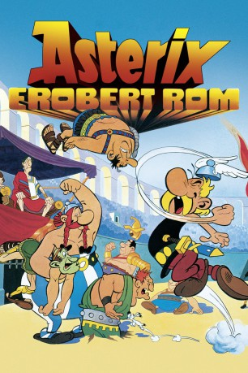
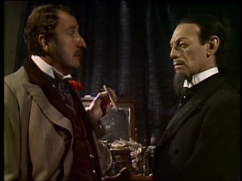

#2993 Asterix erobert Rom (Bayerisch)
Alternativ: The Twelve Tasks of Asterix (Englischer Titel)
 
 IMDB-Wertung: 7.7 / 10
IMDB-Wertung: 7.7 / 10  Metascore: 0
Metascore: 0 
Um die schier unbezwingbaren Gallier ein für alle Mal in ihre Schranken zu weisen, fordert Cäsar sie zu 12 Prüfungen heraus. Im Erfolgsfall seiner Rivalen will er sich geschlagen geben. Asterix und Obelix werden für die Absolvierung der Aufgaben auserwählt, die sich aber selbst für die beiden als sehr schwierig erweisen.
Jahr: 1976
Dauer: 75 Minuten
FSK: 6
Land: Frankreich Studio: Jugendfilm-VerleihTonspuren:
Untertitel:
Auflösung: SD (660x394) Größe: 1075 MB
Genre: Action, Komödie, Abenteuer, Fantasy, Animation/Trick, Familie
Regisseur: René Goscinny, Henri Gruel, Albert Uderzo, Pierre Watrin
Drehbuch: René Goscinny, Albert Uderzo, René Goscinny, Albert Uderzo, Pierre Tchernia
Soundtrack: Gérard Calvi
Darsteller:
- George Baker als Various
 Roger Carel als Astérix / Les 2 sénateurs
Roger Carel als Astérix / Les 2 sénateurs- Jacques Morel als Obélix
- Pierre Tornade als Abraracourcix
- Henri Labussière als Le réceptionniste
- Jean Martinelli als César
- Pascal Mazzotti als
- Lawrence Riesner als
- Claude Dasset als
- Roger Lumont als Cylindrique le Germain, prof de karaté allemand
- Gérard Hernandez als Le vénérable du sommet
 Henri Virlojeux als Panoramix / Iris
Henri Virlojeux als Panoramix / Iris- Nicole Vervil als
- Jacques Hilling als
- Henri Poirier als
- Mary Mongourdin als
- Gisèle Grimm als
- Bernard Lavalette als Le préfet
- Caroline Clerc als
- Micheline Dax als Grande Prêtresse / High Priestess
- Odette Laure als
- Monique Thubert als
- Nicole Jonesco als
- Claude Bertrand als Un sénateur et le centurion
- Georges Atlas als Le Suisse
- Stéphane Steeman als Le Belge
- Alice Sapritch als
- Paul Bacon als Various
- Sean Barrett als Various
-  John Bennett als Vitalstatistix
- Denise Bryer als Impedimenta
- Ysanne Churchman als Various
- Christina Greatrex als Various
- Alexander John als Various
- Michael Kilgarriff als Various
- Barbara Mitchell als Various
- Gennie Nevinson als Various
- Bill Oddie als Asterix
- Oliver Postgate als Narrator
- John Ringham als Various
- Geoffrey Russell als Various
- Terry Scott als Obelix
 William Squire als Getafix
William Squire als Getafix Pierre Tchernia als Récitant / Narrator
Pierre Tchernia als Récitant / Narrator- Paddy Turner als Various
Datei: X:\Kinder Collections\Asterix Mundart\Asterix erobert Rom (Bayerisch) (1976, FSK6, 660x394).mkv seit 14.01.2016
Festplatte: Kinder-Filme+Trick
 Es gibt insgesamt 10 Filme in der Gruppe 'Kinder Collections\Asterix Mundart'
Es gibt insgesamt 10 Filme in der Gruppe 'Kinder Collections\Asterix Mundart'